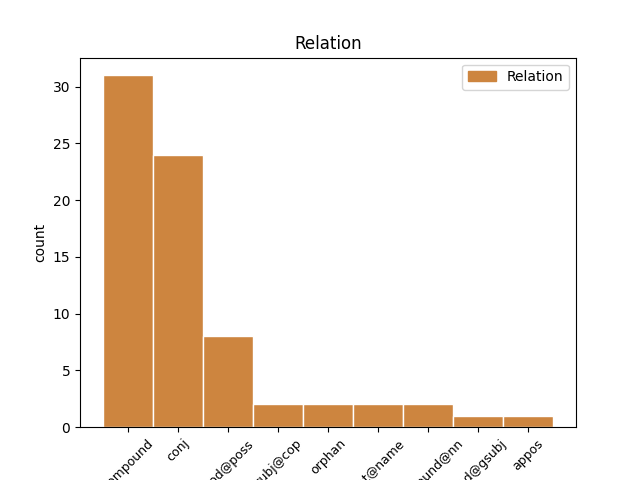
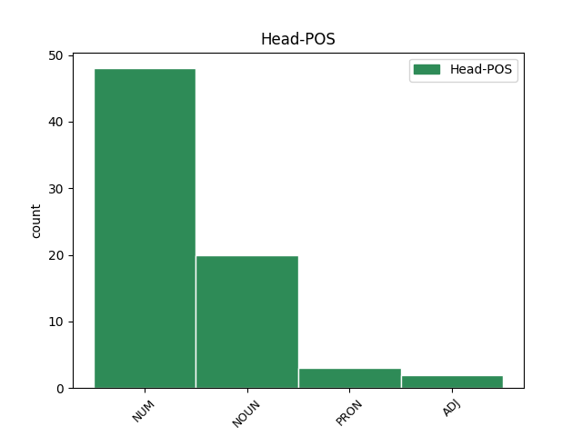
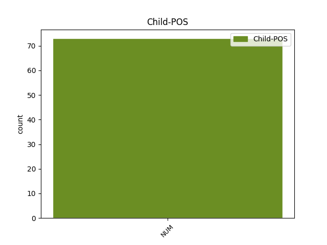

Distribution of features within this leaf



Agreement Rules sorted by frequency.
- When the dependent token is the compound(compound) of the head token, and the head token is NUM and the dependent token is NUM.
1 * _ _ _ _ 0 _ _ _
2 12. _ _ _ _ 0 _ _ _
3 elokuuta _ _ _ _ 0 _ _ _
4 2009 _ _ _ _ 0 _ _ _
5 : _ _ _ _ 0 _ _ _
6 JHL _ _ _ _ 0 _ _ _
7 tukenut _ _ _ _ 0 _ _ _
8 SDP:tä _ _ _ _ 0 _ _ _
9 lähes _ _ _ _ 0 _ _ _
10 puolella puoli NUM Num Case=Ade|Number=Sing 11 compound _ _
11 miljoonalla miljoona NUM Num Case=Ade|Number=Sing|NumType=Card 0 _ _ _
12 eurolla _ _ _ _ 0 _ _ _
13 kolmen _ _ _ _ 0 _ _ _
14 vuoden _ _ _ _ 0 _ _ _
15 aikana _ _ _ _ 0 _ _ _
1 Pesyeitä _ _ _ _ 0 _ _ _
2 voi _ _ _ _ 0 _ _ _
3 olla _ _ _ _ 0 _ _ _
4 kolme kolme NUM Num Case=Nom|Number=Sing|NumType=Card 0 _ _ _
5 tai _ _ _ _ 0 _ _ _
6 jopa _ _ _ _ 0 _ _ _
7 neljä neljä NUM Num Case=Nom|Number=Sing|NumType=Card 4 conj _ _
8 kesän _ _ _ _ 0 _ _ _
9 aikana _ _ _ _ 0 _ _ _
10 . _ _ _ _ 0 _ _ _
1 Lahjoittajia _ _ _ _ 0 _ _ _
2 on _ _ _ _ 0 _ _ _
3 mukana _ _ _ _ 0 _ _ _
4 vauvasta _ _ _ _ 0 _ _ _
5 vaariin _ _ _ _ 0 _ _ _
6 ja _ _ _ _ 0 _ _ _
7 lahjoitetut _ _ _ _ 0 _ _ _
8 summat _ _ _ _ 0 _ _ _
9 ovat _ _ _ _ 0 _ _ _
10 vaihdelleet _ _ _ _ 0 _ _ _
11 kahden _ _ _ _ 0 _ _ _
12 euron euro NOUN N Case=Gen|Number=Sing 0 _ _ _
13 ja _ _ _ _ 0 _ _ _
14 miljoonan miljoona NUM Num Case=Gen|Number=Sing|NumType=Card 12 conj _ _
15 välillä _ _ _ _ 0 _ _ _
16 . _ _ _ _ 0 _ _ _
1 Ensi _ _ _ _ 0 _ _ _
2 sitä se PRON Pron Case=Par|Number=Sing|PronType=Dem 0 _ _ _
3 , _ _ _ _ 0 _ _ _
4 kolmee kolme NUM Num Case=Par|Number=Sing|NumType=Card|Style=Coll 2 conj _ _
5 niin _ _ _ _ 0 _ _ _
6 ku _ _ _ _ 0 _ _ _
7 tonne _ _ _ _ 0 _ _ _
8 ylöspäin _ _ _ _ 0 _ _ _
9 näij _ _ _ _ 0 _ _ _
10 ja _ _ _ _ 0 _ _ _
11 , _ _ _ _ 0 _ _ _
12 sitte _ _ _ _ 0 _ _ _
13 alaspäi _ _ _ _ 0 _ _ _
14 seuraavaa _ _ _ _ 0 _ _ _
1 Eri _ _ _ _ 0 _ _ _
2 lähteissä _ _ _ _ 0 _ _ _
3 Mithridateen _ _ _ _ 0 _ _ _
4 kerrottiin _ _ _ _ 0 _ _ _
5 osanneen _ _ _ _ 0 _ _ _
6 22:ta _ _ _ _ 0 _ _ _
7 , _ _ _ _ 0 _ _ _
8 25:ttä 25 ADJ Num Case=Par|Number=Sing|NumType=Card 0 _ _ _
9 tai _ _ _ _ 0 _ _ _
10 jopa _ _ _ _ 0 _ _ _
11 50:tä 50 NUM Num Case=Par|Number=Sing|NumType=Card 8 conj _ _
12 eri _ _ _ _ 0 _ _ _
13 kieltä _ _ _ _ 0 _ _ _
14 . _ _ _ _ 0 _ _ _
1 Helsingin _ _ _ _ 0 _ _ _
2 Sanomien _ _ _ _ 0 _ _ _
3 mukaan _ _ _ _ 0 _ _ _
4 poliisi _ _ _ _ 0 _ _ _
5 on _ _ _ _ 0 _ _ _
6 vahvistanut _ _ _ _ 0 _ _ _
7 yhdeksän _ _ _ _ 0 _ _ _
8 ihmisen _ _ _ _ 0 _ _ _
9 surman _ _ _ _ 0 _ _ _
10 ja _ _ _ _ 0 _ _ _
11 ainakin _ _ _ _ 0 _ _ _
12 kymmenen kymmenen NUM Num Case=Gen|Number=Sing|NumType=Card 13 mod@gsubj _ _
13 haavoittumisen haavoittuminen NOUN N Case=Gen|Derivation=Minen|Number=Sing 0 _ _ _
14 . _ _ _ _ 0 _ _ _
Disagree Examples:
1 Sunnuntaina _ _ _ _ 0 _ _ _
2 hengailtiin _ _ _ _ 0 _ _ _
3 puistossa _ _ _ _ 0 _ _ _
4 ja _ _ _ _ 0 _ _ _
5 lähdettiin _ _ _ _ 0 _ _ _
6 lopulta _ _ _ _ 0 _ _ _
7 neljän neljä NUM Num Case=Gen|Number=Sing|NumType=Card 8 mod@poss _ _
8 aikoihin aika NOUN N Case=Ill|Number=Plur 0 _ _ _
9 vielä _ _ _ _ 0 _ _ _
10 pidemmälle _ _ _ _ 0 _ _ _
11 kotimatkalle _ _ _ _ 0 _ _ _
12 , _ _ _ _ 0 _ _ _
13 raiteiden _ _ _ _ 0 _ _ _
14 korjauksen _ _ _ _ 0 _ _ _
15 takia _ _ _ _ 0 _ _ _
16 osa _ _ _ _ 0 _ _ _
17 matkasta _ _ _ _ 0 _ _ _
18 meni _ _ _ _ 0 _ _ _
19 bussissa _ _ _ _ 0 _ _ _
20 , _ _ _ _ 0 _ _ _
21 huhh _ _ _ _ 0 _ _ _
22 ... _ _ _ _ 0 _ _ _
1 Erilaisien _ _ _ _ 0 _ _ _
2 suklaahippukeksien _ _ _ _ 0 _ _ _
3 / _ _ _ _ 0 _ _ _
4 pikkuleipien _ _ _ _ 0 _ _ _
5 ohjeita _ _ _ _ 0 _ _ _
6 on _ _ _ _ 0 _ _ _
7 oelmassa _ _ _ _ 0 _ _ _
8 pilvin _ _ _ _ 0 _ _ _
9 pimein _ _ _ _ 0 _ _ _
10 ... _ _ _ _ 0 _ _ _
11 tässä tämä PRON Pron Case=Ine|Number=Sing|PronType=Dem 0 _ _ _
12 yksi yksi NUM Num Case=Nom|Number=Sing|NumType=Card 11 subj@cop _ SpaceAfter=No
13 . _ _ _ _ 0 _ _ _
1 ” _ _ _ _ 0 _ _ _
2 30:n 30 NUM Num Case=Gen|Number=Sing|NumType=Card 3 mod@poss _ _
3 vauhti vauhti NOUN N Case=Nom|Number=Sing 0 _ _ _
4 ei _ _ _ _ 0 _ _ _
5 liene _ _ _ _ 0 _ _ _
6 liioiteltua _ _ _ _ 0 _ _ _
7 50:n _ _ _ _ 0 _ _ _
8 alueella _ _ _ _ 0 _ _ _
9 ” _ _ _ _ 0 _ _ _
10 , _ _ _ _ 0 _ _ _
11 mutisen _ _ _ _ 0 _ _ _
12 . _ _ _ _ 0 _ _ _
1 ” _ _ _ _ 0 _ _ _
2 30:n _ _ _ _ 0 _ _ _
3 vauhti _ _ _ _ 0 _ _ _
4 ei _ _ _ _ 0 _ _ _
5 liene _ _ _ _ 0 _ _ _
6 liioiteltua _ _ _ _ 0 _ _ _
7 50:n 50 NUM Num Case=Gen|Number=Sing|NumType=Card 8 mod@poss _ _
8 alueella alue NOUN N Case=Ade|Number=Sing 0 _ _ _
9 ” _ _ _ _ 0 _ _ _
10 , _ _ _ _ 0 _ _ _
11 mutisen _ _ _ _ 0 _ _ _
12 . _ _ _ _ 0 _ _ _
1 Koko _ _ _ _ 0 _ _ _
2 jengi _ _ _ _ 0 _ _ _
3 kasassa _ _ _ _ 0 _ _ _
4 , _ _ _ _ 0 _ _ _
5 varmaan _ _ _ _ 0 _ _ _
6 kaksi- kaksi NUM Num Case=Nom|Number=Sing|NumType=Card 0 _ _ _
7 tai _ _ _ _ 0 _ _ _
8 kolmekymmentä kolme#kymmenen NUM Num Case=Par|Number=Sing|NumType=Card 6 conj _ _
9 mimmiä _ _ _ _ 0 _ _ _
10 ja _ _ _ _ 0 _ _ _
11 kundia _ _ _ _ 0 _ _ _
12 . _ _ _ _ 0 _ _ _